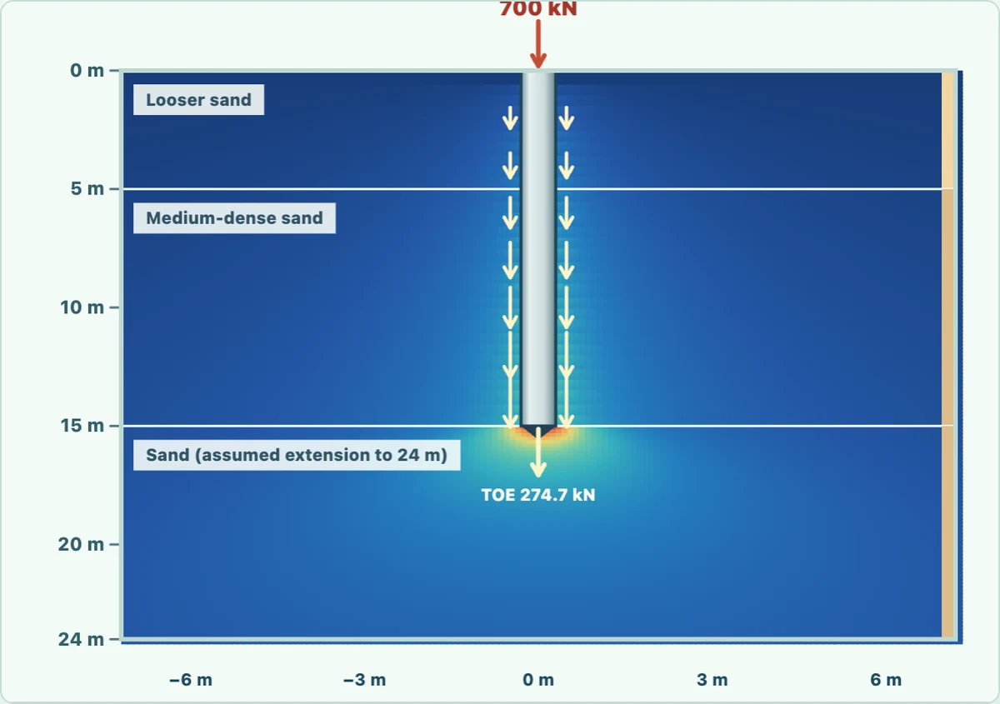

Personal PayPal: enter the recipient manually. No charitable tax deduction.
VISITORS122,300
DELGHE / DÈLGHEM · STRUCTURAL ENGINEERING FOR MAC
Structural analysis.On your Mac.
DÈLGHEM is a structural FEM project for Apple Silicon: native 3D modelling, complex engineering examples and documented Kratos benchmarks. vAlpha1 in development.
DÈLGHEM is developed for native execution on Apple Silicon. Public platform benchmarks show why removing x86 instruction translation matters—but these measurements belong to other workloads, not to the DÈLGHEM solver.
ARM64 / DIRECT EXECUTIONDÈLGHEM → macOS ARM64 → Apple SiliconNative build; no x86 translation in this path
X86_64 / TRANSLATIONIntel x86 → Rosetta 2 → ARM64Compatibility path for older Intel-only macOS applications
Geekbench 5 CPU single coreM1 / 2020
NATIVE ARM64
1687
ROSETTA 2 / X86
1313
OBSERVED DIFFERENCE IN THIS TEST+28.5%
A higher Geekbench score is better. These are public M1 benchmark results, not a DÈLGHEM FEM test.
Reported Geekbench 5 scores for Apple M1 (2020). DÈLGHEM is not part of this study.
COMPLEXITY / FEMBigger models need a better numerical architecture—not a marketing multiplier.
Finite-element solution time and maximum solvable mesh size depend on degrees of freedom, sparse matrix fill-in, algorithm, conditioning, available memory and threading. Native ARM64 removes a compatibility layer; it does not establish a universal speedup or a higher verified model-size limit. A fair DÈLGHEM comparison will require the same structural model, identical convergence tolerance, same Mac and published wall-clock timings.
Explore documented D2 pile and viscous-frame benchmarks alongside a separately identified educational isolation model. The same page shows source evidence, dynamic motion and modelling limits.
A real numerical time-history comparison from the D2 reduced-order Newmark engine. The visible damper is a projected equivalent device; the optional detailed charts distinguish viscous α=0.5/1 constitutive laws.
Synchronized playback starts automatically when visible. Both portals use the same input acceleration.
WITHOUT DAMPER
MAX FRAME ELASTIC SHEAR
WITH DAMPER
MAX FRAME ELASTIC SHEAR
The bar displays the equivalent elastic frame restoring shear |V| = k·|u|, calculated from the D2 condensed stiffness and the two already-solved time histories. It is not a member stress or a beam/column resistance check. Same scale for both frames; device viscous force is not added to frame elastic shear.
ANALYTICAL ACCELEROGRAM · SHARED INPUT
Synthetic diagnostic acceleration, not a historical earthquake record or a calibrated code-design accelerogram.
0,0 s
Drag to orbit. Visually displayed deformations are intentionally magnified.
Comparison of two real D2 numerical time-history solutions
No deviceWith device
Authentic planar D2 model (XZ): exactly two S355 HEB260 columns and one IPE330 beam, 4 native nodes / 3 members with catalog I-section flange and web sizes; fixed base constraints and no fictitious rear frame. Stiffness from 2D Euler–Bernoulli members, and two solved D2 one-DOF histories. The schematic cylinder shows equivalent viscous damping, NOT a validated D2 spatial device connection. Linear damper α=1 represented by projected equivalent C; no native Kratos separate-node damper connection is claimed. Analytical—not recorded—input motion. Not an NTC seismic check.
Damper constitutive F = C · |v|^α and force–displacement loop+
FORCE–VELOCITY
CONSTITUTIVE LOOP
PEAK FORCE—
ENERGY PER CYCLE—
Constitutive relation F = C · sgn(v) · |v|^α. Example parameters C = 180, amplitude 28 mm, frequency 1.25 Hz. Not a manufacturer-qualified device test.
02 / SEISMIC BASE ISOLATION3D FRAME / NEWMARK COMPARISON
The same steel building. Fixed bases versus seismic isolators.
Two synchronized three-storey, four-bay steel frames under the identical synthetic earthquake input. Compare rigid foundations against a moving base diaphragm supported by seismic bearings.
Rigid fixed-base diaphragms. Ground motion transmitted into the steel superstructure.
BASE ISOLATED · SEISMIC BEARINGS
MAX INTERSTOREY SHEAR
Isolator layer takes horizontal travel; the steel-frame interstorey response is attenuated in this simplified example.
The bar displays the instantaneous maximum absolute interstorey shear over three levels, evaluated from the reduced-order k·Δu + c·Δv formulation. It is not a member stress or FEM local stress. Same scale across the fixed and isolated frames. The marker denotes the largest demand reached so far.
IDENTICAL SYNTHETIC ACCELEROGRAM
0 s
ROOF ACCELERATION REDUCTION—
MAX INTERSTOREY DRIFT REDUCTION—
MAXIMUM ISOLATOR TRAVEL—
Fixed-base frameBase-isolated frame
Assumed model parameters and limits +
Mass per storey: 160 tIsolated base mass: 90 tInterstorey lateral stiffness: 55 MN/mInterstorey damping: 185 kN·s/mTotal isolator horizontal stiffness: 4.5 MN/mIsolator damping: 850 kN·s/mIntegration step: 0.015 sInput duration: 15 s
Percent reductions are specific to this assumed configuration and synthetic input; they do not predict performance of an actual building. Isolation bearing travel requires project-specific verification.
ILLUSTRATIVE PARAMETRIC MODEL — NOT A DÈLGHEM FEM RESULT: the drawings represent a 4 × 2 bay steel frame with three storeys and schematic isolation devices. The plotted dynamics are computed here from two separate linear lumped-mass shear-building models (3 DOF fixed base; 4 DOF with an isolation-floor coordinate), integrated by Newmark β = 1/4, γ = 1/2. Bearings are idealized as linear horizontal springs and dashpots; there is no nonlinear hysteresis, torsion, uplift, shear-bearing verification or building-specific seismic design. Animations exaggerate displacement and do not reproduce full 3D frame deformation. Synthetic input, not a recorded accelerogram.
03 / PALI, TERRENO E CEDIMENTID2 / t–z + q–z
Pile Ø600 in layered soil: forces and stress influence
Compare two assumed layered soil profiles: actual native D2 nonlinear t–z/q–z pile response with computed shaft reaction, mobilized toe force and head settlement.
LAYERED SOIL SECTION / STRESSØ0,60 m · L15 m · 2 STRATI + ESTENSIONE

0 kPa— kPa
SHAFT t–z
TOE q–z
SETTLEMENT
Move the pointer over the section to inspect depth and stress.
Δσz is an explicitly approximate elastic stress-influence proxy from real D2 pile shaft/toe reactions, NOT a soil continuum FEM stress field. Vertical arrows represent soilward load transfer through shaft friction. σ′v,0 is the exact self-weight integral for the assumed stratigraphy. Bottom layer is an illustrative extension below the pile toe. The colour map uses a nonlinear gamma 0.35 display scale to reveal low-intensity gradients; the numerical values remain unchanged.
Native D2 t–z/q–z pile load–settlement curve+
SETTLEMENT AT 700 kN—
TOE REACTION—
SHAFT REACTION—
L = 15 m, Ø = 0.60 m, E = 30 GPa. Assumed soil parameters; not a completed NTC pile bearing-capacity check.
The pile reactions and viscous frame histories use published D2 numerical sources; the isolation example is a separately documented reduced-order demonstration. See individual studies for assumptions. None of these is a project-specific NTC safety verification.
MODELS / EVIDENCE / LIMITS
Authentic application screenshot · separate from the two numerical benchmark models above.
INSIDE DÈLGHEM
Genius. Modelling. Results. Drawings.
A complete journey through genuine development outputs.
BUSINESS & TECHNICAL ENQUIRIESContact DÈLGHEMFor information, technical discussions and potential collaborations.
Genius turns supported engineering instructions into real, editable operations on your structural model. Create geometry, modify sections, assign loads and coordinate workflows — with a validated preview before an operation is applied.
THE POWER IS IN THE WORKFLOW
01 Engineering instruction02 Inspect the preview03 Engineer confirms04 Undo and restore
Genuine DÈLGHEM D2 interface · command preview and explicit execution · development build
FROM ENGINEERING INTENT TO EDITABLE MODEL
Describe a change. Genius prepares the model.
Choose an example and follow the connection from technical language to a precisely identified model operation — with a human review gate.
01 / YOUR ENGINEERING INSTRUCTIONCreate a node at 0 0 4
02 / STRUCTURAL ENTITYA new node at X = 0 m · Y = 0 m · Z = 4 m
03 / PREVIEWED CHANGEPrepare a geometric entity with exact coordinates and units.
04 / ENGINEER'S REVIEWReview the reference system and possible duplicate nodes before applying.
Illustrative walkthrough — this website does not execute Genius commands or FEM analysis. Actual edits require confirmation inside the development application; advanced analysis remains subject to validation.
More commands and supported capabilitiesGeometry · sections · loads · analyses+
01 / DESCRIBEWrite an engineering instruction
Use an Italian or English command, with actual model IDs, dimensions and units.
02 / PREVIEWInspect the proposed model change
Genius resolves the command against the current project and shows the effects or a clear error.
03 / APPLYConfirm, review and undo
Only an explicit approved transaction changes the model; undo and redo remain available.
GEOMETRY & TRANSFORMS
Build geometry with text
Create nodes and beams; copy, translate or divide existing members into equal segments.
CATALOG PROPERTIES
Work with real materials
Assign verified catalogue profiles and material classes, including IPE sections and S355 steel.
LOADS & ELEMENTS
From geometry to actions
Apply supported nodal, line, point, thermal and shell pressure loads with explicit units.
ENGINEERING WORKFLOWS
Extend the modeling interface
Find entities, retrieve properties, use context-aware help and route commands to supported analysis workflows.
EXAMPLES FROM IMPLEMENTED GENIUS COMMANDS
One project, many engineering operations
The strategic potential is a model-aware interaction layer that brings creation, selection, properties, loads and analysis commands closer together — while preserving the validated DÈLGHEM data model.
01 / MODELCreate a node at 0 0 4
02 / CATALOGReplace beam B4 with IPE400 S355
03 / EDITSplit beam B4 into 4 equal parts
04 / LOADApply load Fz=-10 kN My=2 kNm to node N4 in case G
Genius is a bounded, deterministic local command interface. It is not an autonomous structural designer: previewed changes and analysis workflows still require professional validation. A command does not constitute a certified structural check.
Your structure, centre stage. Your tools, close at hand.
Geometry, properties and results in one environment. Take a closer look at the actual DÈLGHEM interface.
Your project, in every dimension.
Model views and working tools in the application.
Actual application screenshot
NATIVE SOLVER DATA / REAL D2 BENCHMARKS
Engineering in motion. Stress. Capacity. Dynamics.
Explore DÈLGHEM KratosMultiphysics output: real 176-QUAD shell stress contours, a 240-state nonlinear S235 axial cyclic specimen, incremental dynamic analysis and applied acceleration records. These are separate documented benchmarks. Lateral Pushover capacity curves require further validation.
Unable to load solver benchmark data.
01 / KRATOSMULTIPHYSICS • QUAD4 SHELL + FRAME
Irregular frame: shell stress contours
Genuine KratosMultiphysics static computation on 176 QUAD4 shells and 66 beam segments of the B01 benchmark. The upper/lower face stresses are recovered from native Kratos local membrane forces and bending moments using isotropic elastic N/h ± 6M/h² at four Gauss points. Interior colour is graphical interpolation, not a certified nodal stress field.
ALIASING generates a continuous color gradient across adjacent coplanar QUAD4 elements using graphically averaged vertex colors. This cosmetic averaging can visually attenuate local peaks: read the unchanged Kratos Gauss-point results for engineering interpretation. Mesh and openings remain unchanged.
Three geometries. Three meshes. Three solved fields, visible without switching tabs.
03REAL CASES
σVM · Top face
ALIASING generates a continuous color gradient across adjacent coplanar QUAD4 elements using graphically averaged vertex colors. This cosmetic averaging can visually attenuate local peaks: read the unchanged Kratos Gauss-point results for engineering interpretation. Mesh and openings remain unchanged.
01 / QUAD4 · KRATOS280 elementi
Skewed slab with two openings
Skewed plate · 2 openings · downward pressure
MINMAX
XY · t = 26 cm · q = 3.8 kN/m²
02 / QUAD4 · KRATOS276 elementi
Double-window structural wall
Perforated wall · 2 windows · transverse pressure
MINMAX
XZ · t = 36 cm · q = 2.6 kN/m²
03 / QUAD4 · KRATOS270 elementi
L-shaped transfer slab with service opening
L-shaped slab · re-entrant corner · opening
MINMAX
XY · t = 28 cm · q = 4.2 kN/m²
KRATOS MULTIPHYSICS · 3 SOLUZIONI DISTINTE
Three independent KratosMultiphysics linear-elastic solves, with genuine different QUAD4 topologies and mesh openings. Local face stresses are recovered from Kratos Gauss-point resultants. These plots are not resistance or building safety verifications.
Interactive Kratos viewer unavailable: real solver result previews remain visible.
A verified 240-state, five-branch KratosMultiphysics axial cyclic loading/unloading benchmark for a 3 m S235 IPE 300 specimen. View the initial elastic-to-plastic response, the signed axial force–displacement loop and actual fiber plastic strain. This is not a lateral Pushover or a building capacity curve. The distinct lateral Pushover domain remains under technical qualification.
02.A / INITIAL AXIAL LOADINGIPE 300 · S235
Real axial loading branch and observed steel fiber yielding · X
Actual 3 m S235 IPE 300 axial member with a fixed end, preload and repeated extension/compression in X. Not a flexural lateral Pushover test.
D2 interface · actual Pushover settings ↗
03 / KRATOSMULTIPHYSICS • NEWMARK • STEEL FIBERS
Nonlinear IDA · intensity and demand
True KratosMultiphysics/Newmark steel-fiber results: 16 completed analyses of two oriented diagnostic models (X/Y), each analysed at eight intensity levels. Filled markers indicate actual fiber plasticity. No simulated collapse or statistically fitted fragility.
Recorded base shear versus top displacement from the selected highest-intensity dynamic run.
03.C / STRONG X · PGA MAX
03.D / WEAK Y · PGA MAX
D2 interface · real IDA configuration ↗
04 / DYNAMIC INPUT + NATIVE TIME HISTORY
Accelerograms and structural response
Actual numeric histories applied to the native D2 IDA solver: ground motion and resulting control-node response. They are analytic diagnostic signals, not recordings of historic earthquakes.
04.A / STRONG AXIS · X—
ag(t) / INPUT ACCELERATION
u(t) / CONTROL NODE DISPLACEMENT
04.B / WEAK AXIS · Y—
ag(t) / INPUT ACCELERATION
u(t) / CONTROL NODE DISPLACEMENT
Δt X / Y: —SAMPLES PER RECORD: —εp,max X/Y: —
Actual DÈLGHEM D2 application screenshot · input seismic record configuration ↗
REAL DATA / SOURCE-BASED VISUAL REPORTS
From solver output to an engineering image.
Enlarge each view. These images are captured directly from the site renderer displaying actual DÈLGHEM D2 benchmark datasets. They are not screenshots of the application interface and are not certified design drawings.
All displayed numerical examples now come from KratosMultiphysics: 176 QUAD4 shell elements plus 66 members in the separate B01 benchmark, one 240-state nonlinear S235 axial cyclic run, and 16 nonlinear IDA analyses on two diagnostic orientations. All are separate from the eight-storey homepage concept. Lateral Pushover building capacity is not claimed as validated.
All charts report computed benchmark results and assigned loads, not certified structural safety checks. No ultimate capacity, damage level, collapse, or fragility is inferred beyond observed solver outputs.
04 / DÈLGHEM D2 · REAL DXF LIBRARY
From separate details to a full drawing dossier.
No generic columns or empty connections. Four new full-vector technical plates combine real D2 source model coordinates, genuine reinforcement details and dimensioned M30 steel connections. A fifth appendix separately displays actual Kratos FEM benchmark values. Original DXF archives remain available.
48 / 87RC MODEL NODES / MEMBERS28 × 8STEEL CONNECTIONS / M30 BOLTS176KRATOS QUAD4 · SEPARATE CASE
RC / NATIVE MODEL → CADRC-01 · RC-02
A whole three-storey building, not one column.
Floor plans from 48 original DÈLGHEM nodes, 87 frame members and 5 m structural grids. Elevations have three genuine 3.20 m storeys; a separate reinforcement sheet includes six real beam and column DXF panels.
Model-coordinate steel elevation with genuine W profiles and 9.144 m bays; full 8-bolt M30 groups, 40 mm plates, 270 mm pitch, 250 mm gauge, and D2-exported partial actions and utilization.
SOURCE 2026-10-22 STEEL DESIGN RESULT · INCOMPLETE CONNECTION CHECK
The new sheets combine real D2 structural-model geometry with originally exported DXF details; they are not native complete certified construction sets. Bolt diameter, pitch, gauge and plate thickness come from the D2 connection model; nuts, washers, grip length and weld geometry remain incomplete. Original manifests state completeExecutiveDesign = false, connection checks are partial, and the Kratos appendix is a DIFFERENT benchmark—not proof of these buildings.
05 / MODEL-DERIVED BILL OF MATERIALS
Material quantities. Not estimates invented for a chart.
From actual node coordinates and section areas of a separate DÈLGHEM D2 eight-storey demonstration frame. An inspectable preliminary takeoff, not a priced bill of quantities and not the same project as the RC and steel DXF showcases.
DÈLGHEM D2 / MODEL HFM8-STOREY MIXED DEMONSTRATION212 NODES / 514 MEMBERS / 112 SHELLS
Material breakdown · members only
Loading source-backed quantities…
Member takeoff: centerline length × section area. A separate schedule from 87 reinforcement DXFs is shown without adding it to this model.
2D SURFACE ELEMENTS · D2 MODEL
112 plates and shells: measured areas and volumes.
Separate quantity schedule: polygonal area from source nodes multiplied by each shell's model thickness. Openings and overlaps are not deducted.
Loading shell quantities…
SEPARATE RC ARCHIVE / 87 SHEETS5.239,49 kg
Sum of reinforcement steel weights stated in the real D2 bar schedules. Not included in the mixed-frame totals above.
Scope limitation: 514 one-dimensional members only. Slabs/shells, openings, connections, concrete overlaps, foundations, wastage, procurement and unit prices are omitted; the displayed steel and concrete weights come from model properties. Engineering validation and cost estimation remain outstanding.
From the model to a readable engineering document: input assumptions, computation methods, material quantities and documented validation limits. Real model-derived data, no invented professional signature or approval.
01 / MODEL INPUT
Structural modelling report
Coordinates, node and member inventory, materials and modelling assumptions for the mixed eight-storey D2 demonstrator.
DELGHEM / D2GEOMETRY & MATERIALS212 NODES · 514 MEMBERS
ARM64 architecture, virtualization and benchmark methodologyTechnical evidence+
DÈLGHEM
The native path
DÈLGHEMNative appmacOSApple Silicon
A Mac app. No Windows virtual machine to start.
A Windows app on your Mac
The virtualized path
Windows applicationx86/x64 translation, when requiredWindows Arm + Virtualization softwaremacOS + Apple Silicon
Windows ARM64 applications do not require x86/x64 translation. This diagram describes the architecture; it does not measure performance.
What does “native” really mean?+
An ARM64 build executes instructions compatible with Apple Silicon. Virtualization software can run a guest operating system such as Windows Arm; some x86/x64 applications may require instruction translation. Performance depends on the hardware, workload and configuration: native execution does not automatically guarantee faster results.
Solution time, memory and responsiveness: comparisons with other environments will be published with their models and test conditions.
How we will compare performance
The same Mac and an equivalent structural problem, with software versions specified and comparable numerical results. At least five repetitions, median and variability; separate startup, solution and export times. Application memory and total environment memory measured separately.
Verified comparative benchmarks are not yet available for this presentation.
ENGINEERING LIBRARY / OPTIONAL TECHNICAL DETAILS
Explore the details that matter to you.
All technical content and original application images remain available. Open a topic to inspect source examples without navigating an excessively long main page.
01METHODS & CAPABILITIESTechnical capabilities and workflowsModelling, analysis, verification scope and alpha limitations.+
From the first node. To the whole picture.
Explore the tools present in the development version. Every part of your project has its own space.
Structural modelling
Nodes, members, plates, materials and sections. Build the geometry and work with element properties through the model views.
Static, modal and spectral analysis within the implemented scope. Explore results, deformed shapes and internal force diagrams, connecting geometry to structural response.
Steel member drawings, plate sections and document sets. A dedicated composer organizes the report; deliverables support the development of the project within the implemented scope.
3D, plan and elevation views. Materials and sections, element inspection, project saving and reopening. Light and dark themes for your workspace.
Screenshots show a development version. Commercial availability and the scope of the release version will be announced separately.
ENGINEERING / IN DEPTH
Technical capabilities. Clearly scoped.
Twelve engineering domains — each presented with its actual development status. Features are not a substitute for a project-specific engineering review.
Implemented, scoped
FEM 3D
Nodes, members, shells and diaphragms, material and section properties. Spatial editing in supported domains.
Implemented, scoped
Static analysis
Loads, restraints, combinations and elastic response, with equilibrium checks and independent benchmarks for documented cases.
Under validation
Dynamics, modal and seismic
Modes, masses and specialist analyses for qualified cases. Pushover and IDA still include unqualified cases.
Implemented, scoped
Plates and meshes
Surface elements, plates, floor systems and FEM discretization with geometry and mesh controls.
Implemented, scoped
Deformations and forces
Structural response, displacements and internal force diagrams from supported analyses.
Partial
Steel member checks
I/H and hollow sections in verified subdomains. Buckling, effective sections and advanced interactions are not yet general.
Partial detailing
Steel connections
Plates, holes, dimensions, sections and drawings. Passing, exceeding and review-required results are kept distinct.
Partial
Reinforced concrete
RC checks and reinforcement for beams, columns and plate systems in implemented cases; general anchorage and interactions remain open.
Partial
Foundations and piles
Winkler foundations, caps and pile systems in verified workflows; advanced 3D geotechnical interaction remains in development.
DXF implemented
Drawings and DXF
Plans, floor dossiers and steel workshop drawings. DXF works in supported scopes; general bidirectional DWG remains open.
Implemented, scoped
Genius assistant
Local text commands with preview, validation and Undo: nodes, sections, properties and loads within the supported grammar.
In development
Reports and Apple Silicon
Report composer and macOS ARM64 application with local numerical runtimes. Still in development, not certified for general executive design.
The alpha is in active development. Advanced validation and completeness remain open.
02DRAWINGS & OUTPUTStructural drawings: concrete, steel and timberPreliminary layouts, joint details and exported D2 sheets.+
DÈLGHEM D2 / REAL REINFORCEMENT OUTPUTS
Reinforced concrete. From FEM model to detailed sheets.
The actual DÈLGHEM D2 development build exports member-by-member reinforced-concrete drawings. Explore genuine A1 and DXF extracts for columns and beams—not stock images or fabricated diagrams.
Member sections, bar arrangements, stirrups and schedules.
The native export contains physical longitudinal views, bar diameters, tie spacing, sheet dimensions, measured covers and quantity schedules. The samples are rendered from DÈLGHEM's original files.
Independent audit of the 87 output sheets checked CAD geometry, layer integrity and bar schedules for the tested domain. This is preliminary documentation, not a complete executive design; anchorage, seismic detailing and project-specific resistance checks still require engineering validation.
DÈLGHEM D2 / Real application captures
Steel detailing. From the model to the drawings.
Genuine DÈLGHEM application captures: steel model, dimensioned bolted connection and workshop editing. No synthetic illustrations.
The images below come from DÈLGHEM D2 test builds: structural floor geometry, beam and column identifiers, a floor drawing preview and nonlinear analysis output. They are genuine application captures, not generated images.
↗Floor carpentry planActual floor-level XY framing view showing steel beams, columns and member labels.↗Floor assembly sheetA captured preview of the floor dossier in DÈLGHEM, including member identifiers and preliminary documentation.↗Nonlinear analysis outputReal in-app force–displacement graph from a development verification scenario; not a certified design check.
03APPLICATION SCREENSHOTSInside the native Mac applicationOriginal model, results and workspace captures from DÈLGHEM D2.+
ACTUAL APP / VISUAL LIBRARY
Inside the actual application.
Real screenshots from the macOS application, its verified test builds and exported drawings. No invented user interface.
16 screenshots
Illustrative tests and development interfaces. Not all listed workflows are qualified for general engineering design.
DEVELOPMENT ROADMAP
vAlpha1 / 2027
DÈLGHEM vAlpha1 — Planned release: January 2027
A development milestone, not a guaranteed commercial launch. We are building a transparent, documented structural FEM environment for Apple Silicon.
DÈLGHEM aims to make structural analysis a natural experience on Apple Silicon. If you would like to support development, you can send a voluntary contribution through your PayPal account.
Transparent developmentThe scope and limitations of the alpha build are documented on this website.
How voluntary personal PayPal support works+
PPAYPAL / PERSONAL ACCOUNT
Contribute with PayPal
The recipient uses a personal PayPal account, so no charitable donation button is available. The link opens PayPal for a regular money transfer: you must enter the recipient yourself.
01
Open PayPal
Sign in and choose “Send & Request”.
02
Enter the recipient
Copy and paste the PayPal email displayed below.
03
Check payment type
For project-related commercial payments select “Goods and Services”, if available, and review any fees.
A direct PayPal.Me link can be added only after the account owner provides and verifies their official profile URL.
This is not a charitable fundraiser and does not qualify for charitable tax deductions, licenses or early access. Payment receipt is subject to the PayPal account's settings and verification.
SHARE DÈLGHEM
Share the project with engineers.
Spread the word — no tracking, no automated posts.